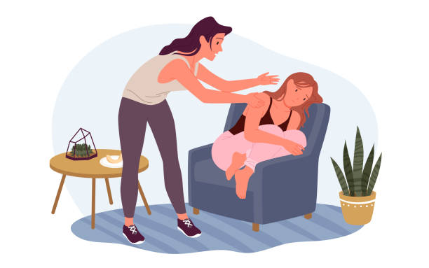

"Psychiatry Was My Passion & Later It Became My Saviour Too." -June 2022 Dr Ruhi Satija

I remember that precise moment when I had lost the fight to myself. I was done. I was done pretending everything was ok. I was done fighting it. I have had many episodes of anxiety attacks in the past but every time I would fall, I would always rise again. I would tell myself it was ok, I would tell myself that it would get better. But this time it was different, I didn't want to do it anymore. I didn't care. I knew what I had to do, I had all the resources, but this time I just didn't have the strength to use them. I would often ask myself, how can I ask for help ? What would people think if being a doctor I couldn't treat myself ?
I remember sitting at the airport alone, sobbing like a baby, trying to hide my tears so no one would notice, and I made a call to one of my best friends who I felt would understand and not judge me.
This was the first time I admitted to someone that I was not okay and I needed help. I remember that moment when despite having everything I always wanted, it felt like I had nothing. I had lost the will & lost the hope. But thankfully, because of my professional background, I knew demotivation & hopelessness were symptoms of mental health disorders.
And this knowledge gave me the strength to differentiate myself from what I was going through & I knew I was not this person. This was the anxiety talking not me. Psychiatry was my passion & later it became my saviour too. Because I knew the facts I acted much faster and recovered. It has taken me a long time to learn how to prioritise myself over others and how to take care of myself. My life has completely changed for the better. And I can tell you, that it does get better. It took me a lot of strength to write this, but I knew I had to. I hope you find strength too. You are not alone in this.
- Dr. Ruhi Satija ( Psychiatrist & Mental Health Survivor)
You can explore more sections from the navigation bar on the onclick of this button.